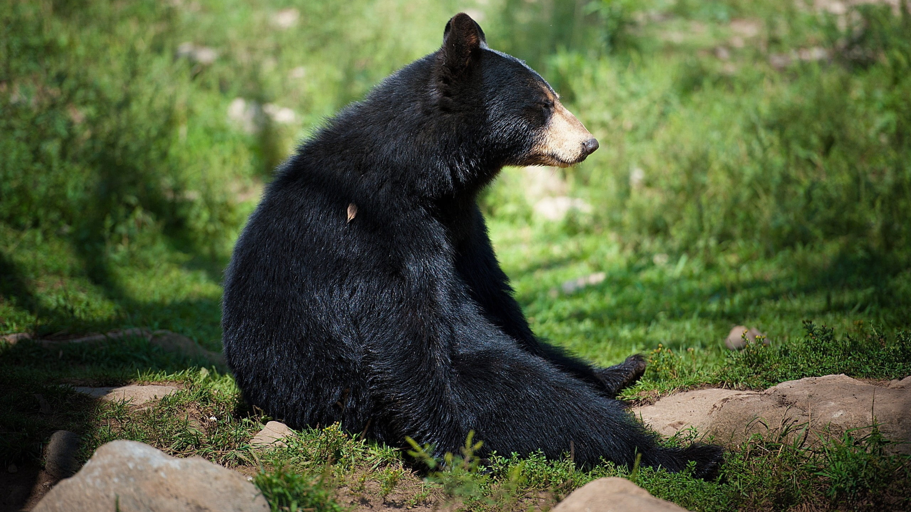
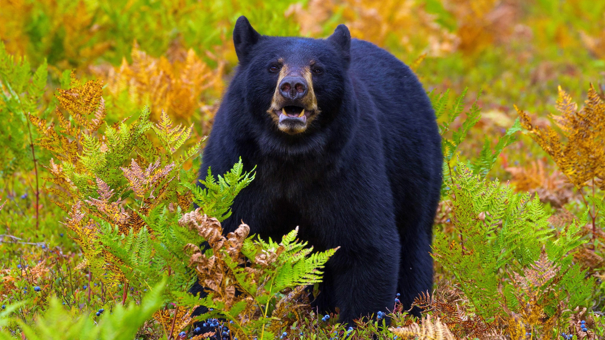
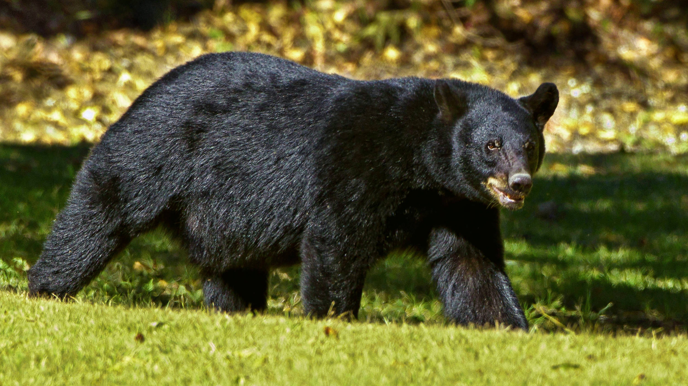

L'Ours noir (Ursus americanus), aussi appelé baribal, est l'ours le plus commun en Amérique du Nord. Il se rencontre dans une aire géographique qui s'étend du nord du Canada et de l'Alaska au nord du Mexique, et des côtes atlantiques aux côtes pacifiques de l'Amérique du Nord. Il est présent dans un bon nombre d'États américains et dans toutes les provinces canadiennes. Il préfère les forêts et les montagnes où il trouve sa nourriture et peut se cacher. La population d'ours noirs était sans doute de deux millions d'individus autrefois. Aujourd'hui, l'on estime qu'il existe entre 500 000 et 750 000 ours noirs sur ce continent. Longtemps chassé pour sa fourrure, il subit aujourd'hui la réduction de son milieu naturel par l'homme. La population de l'Ours noir est généralement stable1. Plus petit que l'Ours brun et l'Ours blanc, cet animal présente une couleur de fourrure plus ou moins foncée selon les régions, allant du noir au blanc (la fourrure blanche est provoquée par un caractère récessif) en passant par le rougeâtre et le gris argenté. On le nomme donc à tort « ours noir ». Seize sous-espèces, dont certaines sont menacées, sont reconnues. L'Ours noir n'hiberne pas au sens strict, mais passe l'hiver dans un état de somnolence en vivant sur ses réserves de graisses accumulées pendant l'automne. Il est omnivore, même si son régime alimentaire est dominé par les végétaux. Contrairement aux idées reçues[réf. nécessaire], l'Ours noir est un bon nageur et il grimpe facilement aux arbres pour échapper à un danger.